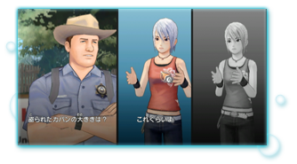
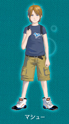
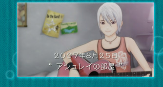
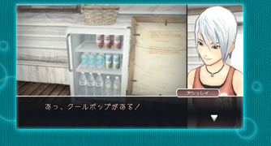
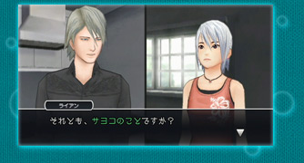
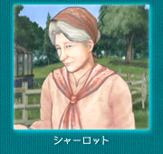
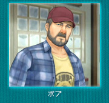

|
個性的なキャラクター達 |

―― |
会話シーンのアシュレイ達の動きや表情なども特徴的ですね。 |
|
小嶺 |
身体の動きがわかることで、キャラクターの個性がわかりやすくなっていると思います。 |
 |
金崎 |
手の動きがなくて、ずっと同じポーズで喋るのも変ですよね。 |
|
吉良 |
同じ「うん」という回答でも、嫌々言っているのか嬉しく言っているのか、それが動きや表情でわかりますからね。 |
|
―― |
たくさんのキャラクターが登場しますが、皆さんのお気に入りは？ |
|
金崎 |
アシュレイはもちろんですけど、マシューですね。前作の“ディー”にあたるキャラで、見た目もディーに少し似せています。アシュレイとのやり取りも前作のディーを彷彿とさせるところがあり、鈴木の書いたマシューとアシュレイの会話は見ていてほほえましいです。いい意味での子供っぽさが出ていてユーザーの皆さんにも好きになってもらえると思います。 |
 |
生田 |
私もマシューです。アシュレイの気持ちになっていたので、最初はマシューがすごく憎たらしくて（笑）。なんでこんなに私を振り回すの？ と思っていたんです。ストーリーを進めて、この子が抱えている背景が見えてきてからは、途中から憎たらしいが小憎たらしいになって、愛情たっぷりになりました |
|
齋藤 |
やっぱりアシュレイに思い入れがありますね。前作ではアシュレイがどんな子なのかをはっきり示していなかったんです。あえて見せていなかったところもあるんですけど。今回はアシュレイの個性をもっと押し出したいと思い、音楽が好きでギターを弾くという設定を鈴木さんにお願いしました。あとはクールポップという炭酸飲料が好きだとか。飲み終えたあとのアシュレイの表情もいい感じです。 |
|
 |
||
吉良 |
アシュレイです。３Ｄ化するにあたって、前作をプレイをしてくれた方にとってのアシュレイのイメージや世界観を崩してしまわないか心配でしたが、そこは上手くいったように思います。 |
|
小嶺 |
私はライアンです。ライアンのキャラクターというよりもアシュレイとライアンという二人の会話が好きですね。この二人の会話、微妙に噛み合っているようで噛み合っていないんです。 |
 |
宮川 |
ソフィアというキャラクターがいるのですが、リアクションとか話し方が面白くて、出てくるたびに笑っていました。なんというかいろいろと思わせぶりなキャラクターで、妄想が広がります。ソフィアを主人公に１本ゲームが作れるくらいじゃないかと思うくらいです。 |
|
鈴木 |
今回は、アシュレイやマシューといった10代の子供達、リチャード達親の世代、そして、さらに上の世代でシャーロットというおばあさんの三世代が登場します。それぞれの世代で、日常や現実をどのように捉えているかを描いています。 |
|
 |